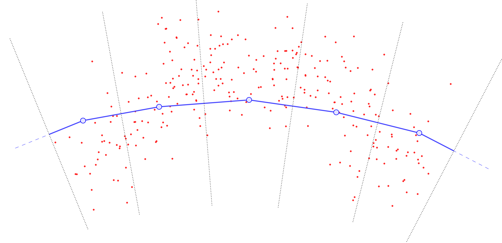
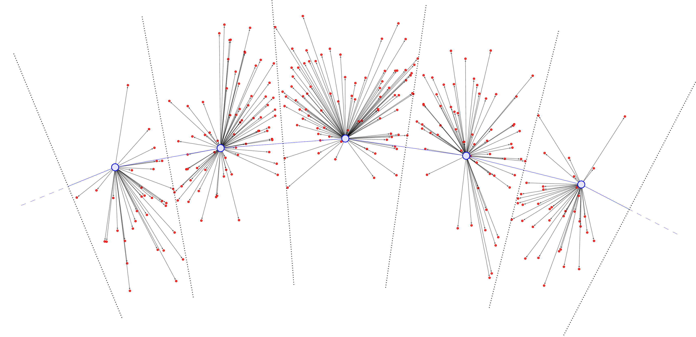
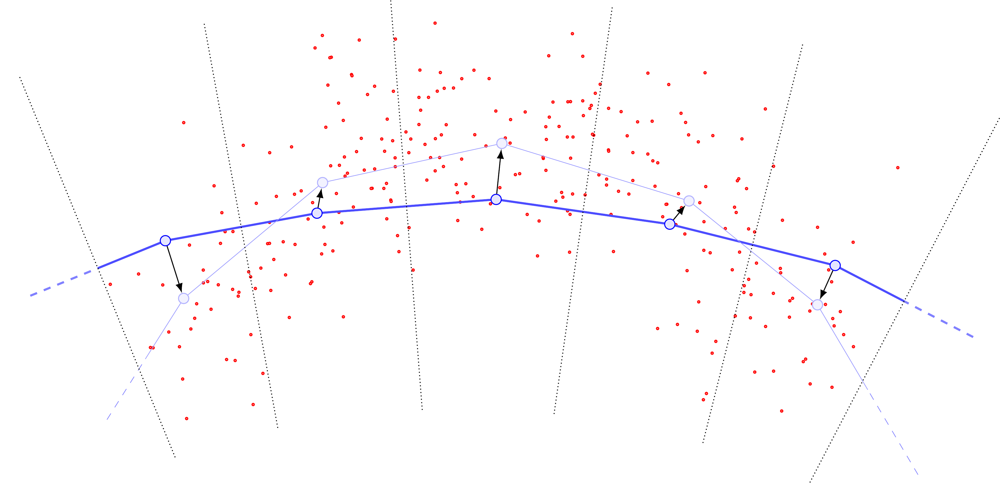
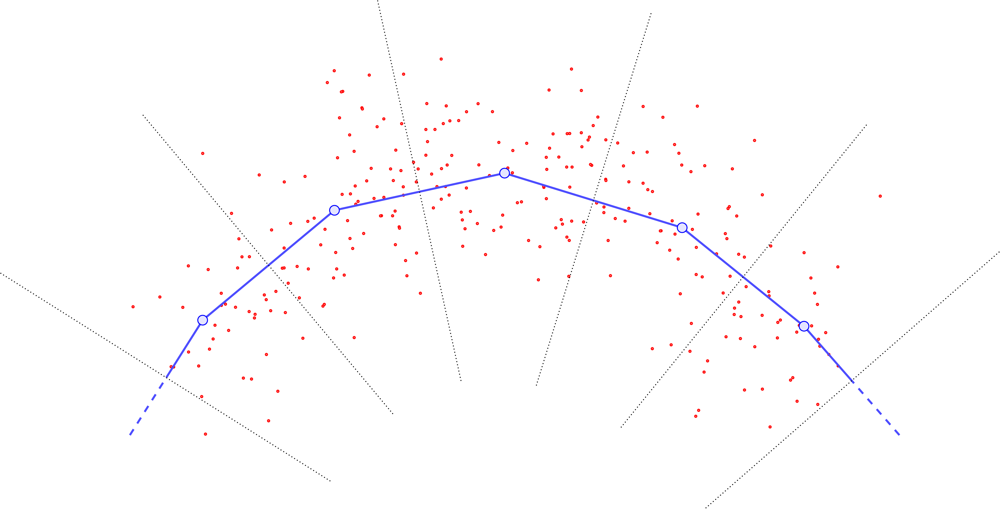
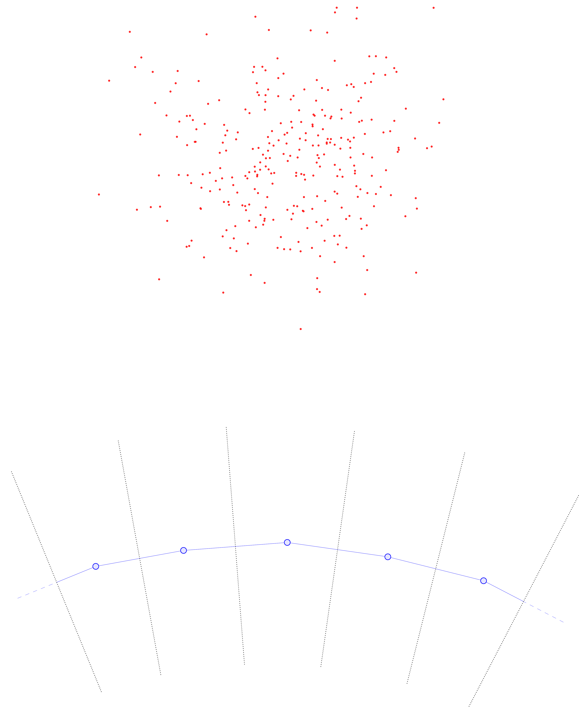
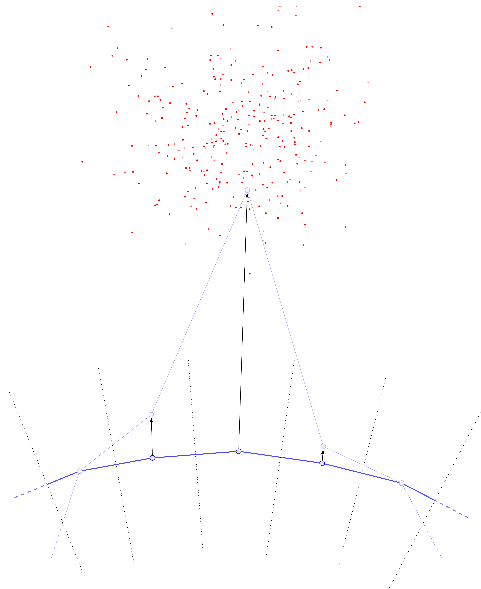
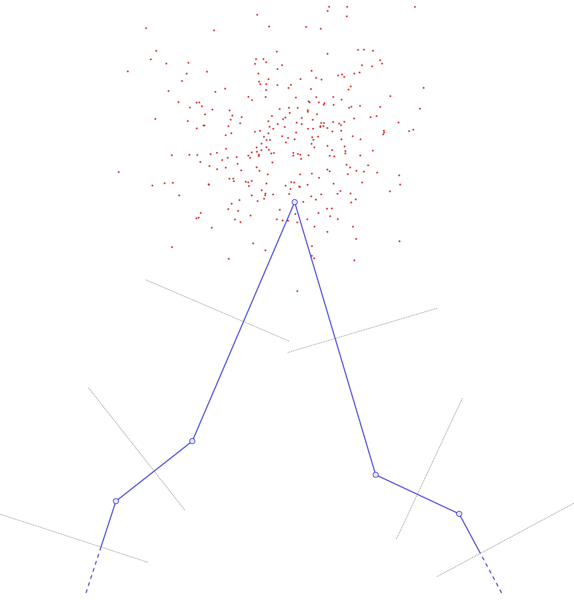
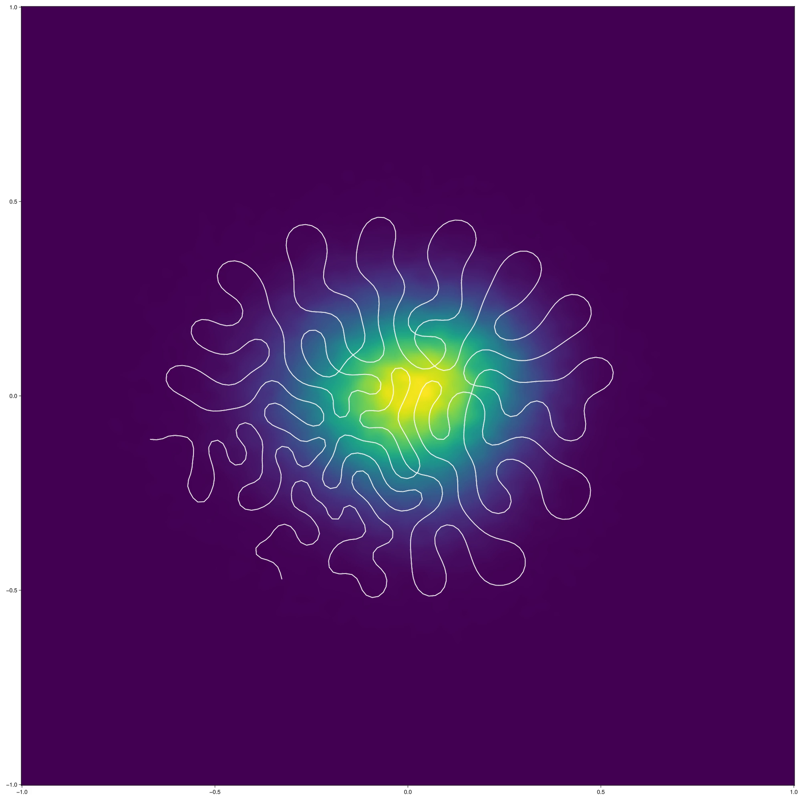
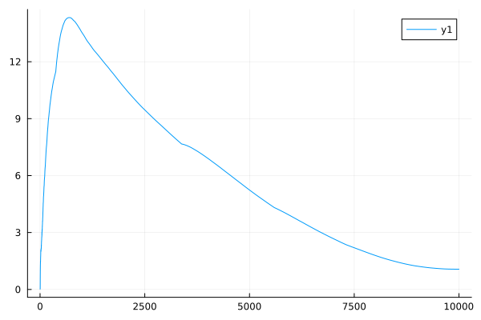

\(\DeclareMathOperator*{\argmin}{\text{arg min}}\)
Motivation for Trajectory Inference Problems
Example: A Hexagonal Billiards Table
Suppose you run an experiment that involves collecting data points \(\{\omega_1, \ldots, \omega_M\} \subseteq \Omega \subseteq \mathbb R^d\). As an example, suppose that \(\Omega\) is the hexagonal domain below, and the \(\omega_i\) represent positions of \(M\) independent, non-interacting particles in \(\Omega\) (all collected simultaneously).

The question is: Just from the position data \(\{\omega_1, \ldots, \omega_M\}\) we have collected, can we determine 1) Whether the particles are all evolving according to the same dynamics, and 2) If so, what those dynamics are? As a sanity check, we can first try superimposing all of the data in one plot.

From the image above, there appears to be no discernable structure. But as we increase our number of samples \(M\), a picture starts to emerge.

and again:


In the limit as \(M \to \infty\), we might obtain a picture like the following:

We see that once \(M\) is large, it becomes (visually) clear that the particles are indeed evolving according to the same time-dependent function \(f : \mathbb R \to \Omega\), but with 1) Small noise in the initial conditions, and 2) Different initial “offsets” \(t_i\) along \(f(t)\).
To expand on (1) a bit more: Note that in the figure above, there’s a fairly-clear “starting” point where the dark grey lines are all clumped together. Let’s say that this represents \(f(0)\). Then we see that the trajectories we observe (call them \(f_i\)) appear to look like they’re governed by the same principles, but with \[f_i(0) = f(0) + \text{ noise} \qquad \text{and} \qquad f_i'(0) = f'(0) + \text{ noise}.\] Together with (2), we see that our observations \(\omega_i\) are really samples from \(f_i(t_i)\). The question is how we may use these samples to recover \(f(t)\).
Let us summarize the information so far.
Summary: The Trajectory Inference Problem
Suppose you have a time-dependent process modeled by some function \(f : [0,T] \to \Omega\), where \(\Omega \subseteq \mathbb R^d\) (or, more generally, an abstract metric space). Then, given observations \[\omega_i = f_i(t_i)\] where the \((f_i, t_i)\) are hidden, how can we estimate \(f(t)\)?
This Is Not Regression!
Note that the problem above might at first look very similar to a regression problem, where one attempts to use data points \((X_i, Y_i)\) to determine a hidden model \(f\) (subject to some noise \(\varepsilon_i\)) giving \[Y_i = f(X_i) + \varepsilon_i.\] If we let \(f_i(X) = f(X) + \varepsilon_i\), then we an almost-identical setup \[Y_i = f_i(X_i).\] The key distinction is that in regression, we assume our data-collection procedure gives us pairs \((X_i, Y_i)\), whereas in the trajectory inference problem our data consists of only the \(Y_i\) and we must infer the \(X_i\) on our own. Note in particular that we have continuum many choices for \(X_i\). This ends up massively complicating the the problem: If we try the trajectory-inference analogue of regularized least squares, the lack of an a priori coupling between \(X_i\) and \(Y_i\) means we lose the convexity structure and must use both different theoretical analysis and different numerical algorithms.
Nevertheless, on a cosmetic level, we may formulate the problems with similar-looking equations. This brings us to regularized principal curves.
(Penalized) Principal Curves, Problem Statement
We consider the following problem. Given:
- An interval \(X \subseteq \mathbb{R}\),
- A set \(\Omega \subseteq \mathbb{R}^d\),
- A data distribution \(\mu\) on \(\Omega\) with finite \(p^{\rm th}\)-moment,
- A number \(p \geq 1\),
- A functional \(\mathscr C\) quantifying the “complexity” of maps \(f : X\to \Omega\), and
- A fixed parameter \(\lambda > 0\),
We want to solve \[\begin{equation} \inf_{f} \int_{\Omega} (d(\omega, f))^p \ d\mu(x) + \lambda \mathscr C(f), \label{eq:ppc} \tag{1} \end{equation}\] where \(d\) denotes the Euclidean metric (though in fact, much of the theory continues to hold in the case of general metric spaces). Note that this is essentially the order-agnostic version of the regression problem above.
For convenience we will use the notation \[\mathscr J_p(f; \mu) = \int_\Omega (d(\omega, f))^p \ d\mu(x),\] and \[J(\lambda) = \inf_f \mathscr J_p(f; \mu) + \lambda \mathscr C(f).\]
Note that when \(\mu\) is an empirical distribution on observed data points \(\omega_1, \ldots, \omega_M\), the optimization problem becomes \[\min_{f} \frac{1}{M} \sum_{i=1}^M (d(\omega_i, f))^p+ \lambda \mathscr C(f).\] Further taking \(p=2\) and denoting \(y_i = \mathrm{argmin}_{y \in \mathrm{image}(f)} d(\omega_i, y)\), we can write it as \[\min_{f} \frac{1}{M} \sum_{i=1}^M \lvert \omega_i - y_i\rvert^2+ \lambda \mathscr C(f),\] whence we recover the relationship with regularized least squares. However, we stress again that the above definition of \(y_i\) implicitly depends on the choice of \(f\), hence making this optimization problem significantly more complex. We typically choose \(\mathscr C\) to reflect a priori knowledge about the regularity of the process that generates our \(\{\omega_i\}\), so that the penalty term in \(\eqref{eq:ppc}\) encourages the optimization process to choose solutions that at least plausibly reflect the underlying generating process.
Some Remarks on The Levers We Can Tweak
Examining the problem statement further, one should take note of exactly which quantities are given vs. which are up to us to prescribe. Essentially, the three meaningful parameters we can play with are items 4, 5, and 6.
The choice of \(p \geq 1\) essentially controls the extent to which we care about “outlier”-detection. In particular,
- supposing \(\mu\) is compact, and
- rescaling so that \(\mathrm{diam}(\mathrm{supp}(\mu)) = 1\),
one sees \[ \begin{align*} \lim_{p \to \infty} \mathscr J_p(f) + \lambda \mathscr{C}(f) &= \inf_f \left(\sup_{\omega \in \mathrm{supp}(\mu)} d(\omega, f) + \lambda \mathscr C(f)\right). \end{align*} \] So, we see that taking \(p \to \infty\) adjusts how much we care about the \(\mu\)-average distance from \(\omega\) to \(f\) vs. the worst-case points. One potentially undesirable consequence here is that if one fixes \(\lambda\) but changes \(p\), in general the constraint value \(\mathscr C(f)\) of an optimizer might change. Thus, it is sometimes necessary to hand-tune \(\lambda\) in order to get “nice” outputs. It is worth noting that if we fix a “budget” \(\ell \geq 0\) and replace the penalized problem with a “hard constraint” formulation \[ \inf_{f \in \{\mathscr C(f) \leq \ell\}} \mathscr J_p(f), \] then this problem does not occur. Of course, nothing in life is ever free (this is a case where we can apply the law of “conservation of pain”): The hard constraint problem is generally totally impractical to implement numerically, since the set \(\{\mathscr C(f) \leq \ell\}\) typically lacks an easy parametrization.
Speaking of \(\mathscr C\), this is our main lever by which we can change the qualitative behavior of the problem. For example, taking \(\mathscr C(f) = \mathrm{Cardinality}(\mathrm{image}(f))\) restricts the class of viable \(f\) to piecewise-constant functions (this roughly recovers the quantization of measures problem). On the other hand, a degenerate constraint function like \(\mathscr C(f) = \mathrm{Vol}_d(\mathrm{image}(f))\) would allow very pathological solutions, e.g. space-filling curves in the case \(d=2\).
Note, for the most part, the existence theory for optimizers must be re-proven for each new choice of \(\mathscr C\) (though, in a forthcoming work (O’Brien, Kobayashi, and Kim 2024), we prove existence in a fairly-general axiomatic context). Most analysis considers the case where \(\mathscr C\) is just the arclength (Kirov and Slepčev 2017; Delattre and Fischer 2020). However, in analogy with smoothing splines, it can be desirable to constrain the higher-order regularity of \(f\) as well, e.g. to smooth out noise in the data. Thus in our preprint (Kobayashi, Hayase, and Kim 2024) we consider the case where \(\mathscr C\) is given by a Sobolev \(W^{k,q}\) norm (here \(k \in [1,\infty)\) and \(q \in (1,\infty)\)); essentially, we consider a \(\mathscr C\) which penalizes large values in the derivatives of orders \(0, 1, \ldots, k-1, k\).
Since Sobolev norms are typically considered primarily for scalar-valued functions, it’s worth explicitly defining which of the trivial extensions to the vector-valued case we are using. Denoting the \(j^{\rm th}\) component function of \(f\) by \(f^{(j)}\), we define \[ \lVert f \rVert_{W^{k,q}(X; \mathbb R^d)} \coloneqq \left( \sum_{j=1}^d \lVert f^{(j)} \rVert^q_{W^{k,q}(X; \mathbb R)} \right)^{1/q}. \] Note, one should more or less always take \(q = 2\), otherwise \(\mathscr C\) would not be rotation-invariant. From now on, unless explicitly stated otherwise, we will interpet \(\mathscr C\) to mean this Sobolev norm.
Lastly, we have the penalty parameter \(\lambda\). This essentially just controls the desired balance between \(\mathscr J_p\) and \(\mathscr C\). Due to the minimization structure of the objective functional, one may verify that the optimal value \(J(\lambda)\) is nondecreasing in \(\lambda\). However, a priori, it is nontrivial to try and determine what value of \(\lambda\) will yield an optimizer with budget \(\mathscr C(f) \leq \ell\).
Numerical Simulation
We now turn to the matter of establishing a numerical algorithm for estimating principal curves. In (Kobayashi, Hayase, and Kim 2024) we sketched a fast, stable algorithm for the particular case where \(\mu\) is the uniform measure on a piecewise-linear (PL) \(\Omega \subseteq \mathbb R^2\). This algorithm posessed many stability qualities that were desirable for studying qualitative properties of \(\eqref{eq:ppc}\); however, the restrictions on \(\mu\) made it essentially impractical for real-world use. Thus we have developed an adaptation that works for general measures of the form \[\mu = \frac{1}{N} \sum_{i=1}^N \delta_{x_i},\] though we note that it would not be much harder to treat the case of \(\mu = \frac{1}{N} \sum_{i=1}^N w_i \delta_{x_i}\) where \(w_i \in \mathbb R\). In any case, this only affects the computation of \(\mathscr J_p(f; \mu)\).
The method itself is essentially a gradient descent. The two main pieces are, perhaps predictably,
- Estimation of \(\mathscr J_p(f; \mu)\) (and its “gradient” \(U\)), and
- Estimation of \(\mathscr C(f)\) (and, analogously to \(U\), the corresponding “gradient” \(V\)).
To make computations tractable we must discretize \(f\) into \(M\) sample points \(y_1 = f(t_1), y_2 = f(t_2), \ldots, y_M = f(t_M)\). For reasons that will become clear later, we require these samples to be chosen such that for all \(i = 1, \ldots, M-1\) \[\mathrm{arclen}(f \vert_{[t_i, t_{i+1}]}) \approx \frac{1}{M-1} \mathrm{arclen}(f).\tag{2} \label{eq:arclen-even}\]
In any case, a major practical benefit of discretizing \(f\) is that when computing the first variations of \(\mathscr J_p\) and \(\mathscr C\) we may restrict our attention to discretized perturbation functions \(\xi\), which in turn will eventually allows us to write \(U\) and \(V\) as finite vector fields. This allows us to compute \(U\) explicitly, and to efficiently approximate \(V\). In terms of stability, the discretization creates no problems for \(\mathscr J_p(f; \mu)\). The problems with \(U\) are a bit trickier, but still relatively mild. By contrast, \(\mathscr C\) and \(V\) require much greater care.
Let us begin with an overview of the “easy” part; the computations for \(\mathscr J_p\).
The data-fitting term \(\mathscr J_p(f; \mu)\) and its gradient \(U\).
Fast Computation of \(\mathscr J_p(f; \mu)\).
Since we assume \(f\) has been discretized into \(\{y_1, \ldots, y_M\}\) and \(\mu\) is an empirical measure in \(\mathbb R^d\), we may rewrite \(\mathscr J_p(f; \mu)\) as \[\mathscr J_p(f; \mu) = \frac{1}{N} \sum_{i=1}^N \min_{j=1, \ldots, M} \lvert \omega_i - y_j \rvert^p.\] Naively computing this quantity by looping over the \(\{\omega_i\}\) and \(\{y_j\}\) would require \(O(NM)\) operations. Since our Cryo-EM datasets can easily have between \(10^6\sim 10^8\) datapoints, this is a bit too slow on the CPU, so instead we have written a simple brute-force GPU method in Python.
import torch
from pykeops.torch import LazyTensor
def compute_Jp(O, Y, p=2):
LO = LazyTensor(O[:,None,:])
LY = LazyTensor(Y[None,:,:])
J = (abs(LO - LY)**2).sum(dim=2)
return float(J.min(1).pow(p/2).sum() / O.size()[0])
# e.g. representing 1e7 data points in 10d
O = torch.rand(1_000_000, 10).cuda()
# e.g. representing 100 curve sample points
Y = torch.rand(100, 10).cuda()
## On our GTX 1080 this yields output:
# 1.12 ms ± 2.22 μs per loop
# (mean ± std. dev. of 7 runs, 1,000 loops each)
%timeit compute_Jp(O,Y, p=2)for the sake of illustration, observe the runtime difference with the analogous CPU-based method:
def cpu_Jp(O, Y, p=2):
LO = O[:,None,:]
LY = Y[None,:,:]
J = ((LO - LY)**2).sum(dim=2)
if p == 2:
return float(J.min(1).values.sum()/O.size()[0])
else:
return float(J.min(1).values.pow(p/2).sum()/O.size()[0])
O = torch.rand(1_000_000, 10)
Y = torch.rand(100, 10)
## On our i7 4790k this yields output:
# 1.5 s ± 30.5 ms per loop
# (mean ± std. dev. of 7 runs, 1 loop each)
## ~1000x slower!
%timeit cpu_Jp(O,Y)Computing the gradient \(U\) is not much more complicated in implementation, but requires some additional formulae.
Computing \(U = \nabla \mathscr J_p(f)\).
For concision let \[y(\omega) = \argmin_{y \in Y} \lvert\omega - y\rvert.\] In Cor. 410 of (Kobayashi, Hayase, and Kim 2024) we essentially showed that given \(f \in C(X; \Omega)\) and \(\xi \in C(X; \mathbb R^d)\), modulo some technical details one has \[ \begin{equation} \lim_{\varepsilon \to 0} \frac{\mathscr J_p(f + \varepsilon \xi) - \mathscr J_p(f)}{\varepsilon} = \int_\Omega (\omega - y(\omega)) \lvert \omega - y(\omega) \rvert^{p-2} \cdot \xi(y(\omega)) \ d\mu(\omega). \tag{3} \label{eq:first-var} \end{equation} \] An analogous formula for the discretized case is found in Prop. 5.5 of (Kobayashi, Hayase, and Kim 2024). In this case, one may show that the difference quotient \(\eqref{eq:first-var}\) is minimized when \(\xi(y_j)\) is defined to be \[ \xi(y_j) = \frac{1}{M} \sum_{\{\omega_i \mid y(\omega_i) = y_j\}} (\omega_i - y_j) \lvert\omega_i - y_j\rvert^{p-2}. \] The idea is that \(\xi(y_j)\) essentially encodes the \((p-1)\)-barycenter of the Voronoi cell \(\{\omega_i \mid y(\omega_i) = y_j\}\), so that \(y_j \mapsto y_j + \xi(y_j)\) moves the curve “closer” to the data.
The cartoon illustration is as follows (figures copied from our soon-to-be-released preprint (Warren et al. 2024)). First, we compute the Voronoi cells (denoted by the dotted lines) assigning each \(\color{red} \omega_i\) (red points) to closest \(\color{blue} y_j\) (large blue points):

Then, we compute all the displacement vectors \((\omega_i - y_j)\):

Summing them and normalizing by the total points in \(\mu\) yields a vector field (black) defined at the \(\color{blue} y_j\).


The importance of (arclength)-evenly-spaced curve samples.
Examining the cartoons above, one sees that if we do not choose our \(\{y_j\}\) to be roughly evenly-spaced according to arclength, we are almost guaranteed to introduce bias into the computation of \(U\). In particular, without roughly evenly-spaced points, points \(y_j\) in “sparse” regions of the curve will have far more points in their Voronoi cells, and this can be a self-reinforcing error. For example, suppose that locally the data distribution is relatively concentrated and far from the curve.

The update steps will produce something like the following:

Drawing the new curve with its updated Voronoi cells, one sees that the middle \(y\) point has pulled so far away from the rest that it now has a monopoly on all the data (previously, the data was split between three Voronoi cells).

Since the other Voronoi cells now receive no mass, their base \(y\) points will become static and no longer update in any subsequent iteration, while the previously-moved \(y\) point will slowly drift toward the barycenter of the point cloud.
Resampling to ensure the base points \(\{y_j\}\) are roughly evenly-spaced according to arclength helps to mitigate this problem, by inserting new sample \(y\)’s next to any \(y_j\) that gets “too far” away from the rest. Thus \(U\) doesn’t “blow up” so much at particular \(y_j\) points, and is rather slightly more uniform in \(y\).
In conjunction with the constraint terms we will discuss in a moment, this resampling gives relatively-nice “evenness” in the curve evolution.
A word on Spline Parametrization
Computing \(\mathscr C\) requires evaluation of higher-order derivatives. Rather than using higher-order finite-difference schemes, we elected to first smooth the curve points \(\{y_j\}\) via spline-fitting and then evaluate the derivatives of these splines. This was done so as to also facilitate our arclength reparametrization algorithm. In particular, we chose to use B-splines, as we now describe.
B-Splines
Let us begin with some preliminaries. We define the family of (scalar) splines of order \(k+1\) on knots \(t_1 < t_2 < \cdots < t_{N}\) as:
The colleciton of piecewise functions of the form \[ S(t) = \begin{cases} P_1 & t \in [t_1, t_2] \\ P_2 & t \in [t_2, t_3] \\ \vdots & \\ P_{N-1} & t \in [t_{N-1}, t_N], \end{cases}\] where each \(P_j\) is a polynomial of degree \(k\), and overall \(S \in C^{k-1}(X; \mathbb R)\).
Abbreviating the collection of knots as \(T\), we shall denote this family by \(\mathrm{Spl}_{k+1}(T; \mathbb R)\). Note that since trivially each \(P_j \in C^{k-1}((t_j, t_{j+1}); \mathbb R)\), the overall \(C^{k-1}\) requirement on elements of \(\mathrm{Spl}_{k+1}(T; \mathbb R)\) can be stated equivalently as: For all \(\alpha = 1, \ldots, k-1\) and \(j = 1, \ldots, N-2\) one has \[\frac{d^\alpha P_j}{dt^\alpha} \bigg\vert_{t=t_{j+1}} = \frac{d^\alpha P_{j+1}}{dt^\alpha} \bigg\vert_{t=t_{j+1}}.\]
Next, to define vector-valued splines \(\mathrm{Spl}_{k+1}(T; \mathbb R^{d})\), we can simply require that for each \(i = 1, \ldots, d\), the component function \(S^{(i)} \in \mathrm{Spl}_{k+1}(T; \mathbb R)\). Note that in this way \(\mathrm{Spl}_{k+1}(T; \mathbb R^d)\) trivially inherits vector arithmetic from \(\mathbb R^d\). Viewed from this perspective, a B-spline of order \(k+1\) on \(T\) will be a particular choice of basis for \(\mathrm{Spl}_{k+1}(T; \mathbb R^d)\). This basis will be chosen in a way that yields a fast algorithm for computing an element of \(\mathrm{Spl}_{k+1}(T; \mathbb R^d)\) that interpolates a given sequence of points \(\{y_1, \ldots, y_N\}\).
The construction is recursive; to simplify some of the casework at the endpoints, we shall for now append \(k\) “auxiliary” knots that have no important meaning on either side of \(T\), i.e. \[T = \cdots < t_{-1} < t_0 < t_1 < \cdots < t_{k-1} < t_k < t_{k+1} \cdots.\] With this we first consider the \(k=0\) case, and will then define the \(k=i+1^{\rm st}\) basis via a recursive formula in terms of elements of the \(k=i^{\rm th}\) basis. Again, for the time being we will simply consider the scalar spline case, as the vector-valued case is no more complicated.
(Base case: \(k=0\))
Since in the \(k=0\) case our regularity requirement degenerates to “\(S \in C^{-1}\)” (whatever that means), we may simply define the basis functions \(B_{j,0}\) to be the characteristic functions \[ B_{j,0}(t) = \chi_{[t_j, t_{j+1})}, \] In this case it’s easy to construct the interpolating “spline” — one simply has the piecewise-constant function \[ S(t) = \sum_{j=1}^{N} y_j B_{j,0}(t). \]
(Recursive case: \(k > 1\))
Before we give the formula, we note to the reader that each time we increment k += 1, the support of our basis functions \(B_{j, k+1}\) will increase to include one additional adjacent knot interval. Some intuition about why this might make sense are as follows:
Consider a particular fixed \(t_j\) and imagine iteratively building out the spline \(S(t)\) on either side, starting with a simple \(k=1\) interpolation. In this case the \(C^{k-1}\) restriction just requires \(S(t)\) to be continuous, yielding a simple piecewise-linear interpolation.
Now, suppose we add one order of regularity, and, say, prescribe the derivative at \(t_j\) to be \(\frac{d}{dt} S(t_j) = C_{j,1} \in \mathbb R\) with no other restrictions. Observe that since \(S(t)\) is piecewise quadratic, the second derivative is piecewise constant; denote its value on \([t_j, t_{j+1})\) by \(C_{j,2}\). Then observe both \(S(t_{j+1})\) and \(\frac{d}{dt} S \Big\vert_{t=t_{j+1}}\) are uniquely determined by the choice of \(C_2\). So, we see that in some sense, the data \(S(t_j)\), \(\frac{d}{dt} S \Big \vert_{t=t_j}\), and \(\frac{d^2}{dt^2} S \Big\vert_{t=t_j}\) we prescribed at \(t_j\) has propagated to a restriction on the data \(S(t_{j+1})\) and \(\frac{d}{dt} \Big \vert_{t=t_{j+1}}\) at \(t_{j+1}\). However, without further prescribing \(C_{j+1,2}\), we can say nothing about the data at \(t_{j+2}\) other than the interpolation requirement \(S(t_{j+2}) = y_{j+2}\).
Repeating the analogous argument for higher \(k\), one sees that in general, prescribing data of order \(0, \ldots, k\) at \(t_j\) restricts the data of order \(0, \ldots, k-1\) at \(t_{j+1}\), the data of order \(0, \ldots, k-2\) at \(t_{j+2}\), and so on and so forth. Thus, it seems tentatively reasonable that our basis functions could have supports that grow with \(k\), loosely reflecting how at least some of the information from the data at \(t_j\) “propagates” up to \(t_{j+k-1}\).
Thinking about the perspective above a little further, it is easy to get confused. Somehow, something doesn’t seem right about being able to specify full-order data at \(t_{j}\), then either specifying one additional piece of data at \(t_{j+1}\) or specifying two pieces at \(t_{j+2}\). But in theory, we should be specifying the same amount of data at every \(t_j\): The coefficients on our basis functions.
Yes, indeed we should! And that’s what we’ll actually do in the end. The trick is that instead of prescribing the full-order polynomial data on the piece \([t_{j}, t_{j+1})\), we can define our basis elements such that for each \(j\), the \(k+1\) basis elements \[B_{j-k,k}, B_{j-k+1,k}, \ldots, B_{j,k}\] form a smooth partition of unity on \([t_j, t_{j+1})\); that is, for all \(t \in [t_j, t_{j+1})\), \[\sum_{j'=j-k}^{j} B_{j',k}(t) = 1.\] Thus, each of the basis elements will indirectly encode the “diffusion” of information across \(k+1\) intervals.
The particular recursion we use is the so-called Cox-de Boor formula: \[B_{j,k}(t) = \frac{t - t_j}{t_{j+k} - t_j} B_{j, k-1}(t) + \frac{t_{j+k+1} - t}{t_{j+k+1} - t_{j+1}} B_{j+1, k-1}(t). \tag{4} \label{eq:cox-de-boor}\]
Combining the \(k=0\) and \(k>0\) cases, one may verify that this indeed forms a basis for \(\mathrm{Spl}_{k+1}(T; \mathbb R)\), and hence its \(d\)-fold direct sum gives a basis for \(\mathrm{Spl}(T; \mathbb R^d)\). One may then show (see, e.g. equation 1.35 of these notes) that given the interpolation points \(\{y_j\}\), the basis coefficients of the spline interpolating the \(\{y_j\}\) can be obtained by inverting a banded matrix of bandwidth \(k\), which can be done efficiently.
Obtaining an (approximate) arclength parametrization
Next, given a spline \(S(t)\) derived through the process above, let us discuss how we obtain an (approximate) arclength reparametrization of \(S\). Essentially we follow the ideas of this monograph. For simplicity, suppose the domain \(X = [0,1]\). Then the basic idea is that we may write \[\mathrm{arclen}(S) = \int_{0}^{1} \sqrt{\sum_{i=1}^d (\dot S^{(i)}(t))^2} \ dt.\] Let us examine the summation \(\sum_{i=1}^d (\dot S^{(i)}(t))^2\) a bit more carefully at some fixed \(t_0\). Provided \(k \geq 4\), each \(S^{(i)}(t_0)\) will be a cubic expression in \(t_0\), whence \(\dot S^{(i)}(t_0)\) will be quadratic in \(t_0\), and so \(\sum_{i=1}^d (\dot S^{(i)}(t_0))^2\) will be a sum of quartics in \(t_0\).
Observe that we typically expect this expression to have no real roots: In order for this to happen, we would need all \(\dot S^{(i)}(t_0) = 0\), which should (?) only occur in degenerate cases.
In any case, as in the above linked monograph, if we could factor the quartic into four linear factors, then the integral could be approximated via numerical evaluation of certain other known functions given by a table of elliptic integral solutions. Hence, we employ a fast numerical root-solving routine, which allows us to efficiently evaluate \[\mathrm{arclen}(S \vert_{[0,t_0]}) = \int_0^{t_0} \lvert \dot S(t) \rvert \ dt.\] With this, \(\mathrm{arclen}(S)\) may be efficiently computed, and so we m may efficiently compute \(\frac{1}{M-1} \mathrm{arclen}(S)\) (see \(\eqref{eq:arclen-even}\)) without the use of quadrature.
Finally, we obtain the proper choice of the knots \(\{t_1, \ldots, t_N\}\) by applying a fast Root-finding method to find where \(\mathrm{arclen}(S\vert_{[0,t]}) \approx \frac{j-1}{N-1} \mathrm{arclen}(S)\), and refitting a spline on the new interpolation points \(\{S(t_1), S(t_2), \ldots, S(t_{N})\}\).
Finally, we may discuss the computation of the constraint terms.
The constraint term \(\mathscr C\) and its gradient \(V\).
Note that compactly-supported scalar functions with bounded, piecewise-continuous \(k^{\rm th}\)-order derivatives are automatically \(W^{k,q}\) functions. So, in particular, if we fit a \(k+1\)-order (note the confusing terminology re: “spline order”) spline \(f\) to the arclen-evenly-spaced interpolation points \(\{S(t_1), S(t_2), \ldots, S(t_N)\}\) obtained in the previous section, its constraint value will be finite. Then, via a complicated (but numerically quite efficient) algorithm below, we can estimate \(\lVert f \rVert_{W^{k,q}(X; \Omega)}\) by aggregating and evaluating the derivatives of each order at the knots \(t_1, \ldots, t_N\).
Computing the Sobolev Cost and Sobolev Gradient
As this post is quite long and technical already and I will for now just add the Julia code below here and postpone a more detailed explanation of the computations for the work we are writing on this now. The interested reader can reference the partial explanations given in the documentation.
using BSplineKit
using LinearAlgebra
using StructArrays
using Statistics
using BandedMatrices
using Base.Threads
# Compute just \mathscr{C}
function sobolev_cost(
points::Matrix{<:Real};
order::Val{Order}=Val(4),
k=3,
q=2,
costs=ones(k+1), # use to reweight contributions from derivatives of each order
num_samples=size(points, 1)+1, # changed size index to 1
bcs = Tuple(Derivative.(2:max(2, k÷2))) # BCs: derivs 2 to floor(k/2) zero
) where {Order}
Order::Int
# Set constants
spl_order = BSplineOrder{Order}()
N,d = size(points)
x = LinRange(-1, 1, size(points, 1))
samples = LinRange(-1, 1, num_samples)
# Get the BSpline basis functions
B = BSplineBasis(spl_order, x)
# Add the natural boundary conditions (should be passed in as a
# kwarg). Need to not overwrite default augment=true; otherwise we
# clip off the edges of the domain in this step.
B = RecombinedBSplineBasis(B, bcs)
# Get a collection of (internal BSplineKit) differential operators
# that we can use to differentiate our bsplines
diffs::Vector{Derivative} = Derivative.(0:k)
# The inner loop evaluates all derivatives of bspline at each
# sample. It automatically filters to only compute things for
# those B-splines which are nonzero at the given sample (since in
# general the bsplines are defined piecewise to have compact
# support)
#
# Dbasis is a collection of vectors of tuples. We have one vector
# for each sample in samples. Each vector consists of k+1 tuples.
# The first entry in each tuple is an index which tells us which
# basis function is computed. The second entry of the tuple is
# itself a tuple of k+1 values, which tell us the values of the
# derivatives of each order of that basis function at sample.
Dbasis = [B.(sample, diffs) for sample in samples]
# This gets all of the indices ("which BSpline is supported at
# point sample")
I = first.(first.(Dbasis))
# Get the collocation matrices for each order of differentiation.
#
# Note that we make this explicit call to collocation_points
# because it very slightly perturbs the endpoints (otherwise,
# because we used RecombinedBSplineBasis, the collocation matrix
# might not be invertible.)
colloc_pts = collocation_points(B)
# collocation matrix
M = collocation_matrix(B, colloc_pts)
# gross hack to transpose a CollocationMatrix
MF, MtF = lu(M), lu!(CollocationMatrix(BandedMatrix(BandedMatrix(M)')))
# From the docs: Given B-spline coefficents uⱼ, one can recover
# the values (or derivatives) of the spline at the collocation
# points by v = C * u. Conversely, if one knows vᵢ, one may obtain
# u by u = C \ v. (Note here MF plays the role of C).
#
# So, this vector represents the coefficients of stuff at each of
# the input data points.
#
# Basically, we're writing the interpolating spline as a linear
# combination of basis splines, and this computation here gets the
# coefficients of the linear combination along *each* dimension
# (since each component function of our interpolating spline is a
# spline)
C = reduce(hcat, [MF \ points[:, j] for j in 1:d])'
# Initialize empty array to put derivative computations in
D = Array{Float64}(undef, (num_samples, k+1, d))
# Multithread to treat each component function in parallel
@threads for ind in collect(eachindex(I))
i, ibasis = I[ind], Dbasis[ind]
for j in 1:k+1
for l in 1:d
# Since we're using natural boundary conditions, it's
# possible that fewer than k+1 splines will be nonzero
# for the first few indices. So we just handle this by
# casework.
#
# In any case, the dot product aggregates all of the
# relevant bspline derivatives
#
blen = length(last(ibasis[j]))
if i < blen
D[ind,j,l] = dot(C[l, i:-1:begin], last(ibasis[j])[1:i])
elseif N < i
diff = N - (i-blen+1)
D[ind,j,l] = dot(C[l, N:-1:i-blen+1], last(ibasis[j])[diff:end])
else
D[ind,j,l] = dot(C[l, i:-1:i-blen+1], last(ibasis[j]))
end
end
end
end
# eachslice over dims (1,2) aggregates all the derivatives for
# dim 1: a given sample index
# dim 2: a given order of differentiation
# So, by computing the norm, we get the combined contribution of
# this sample point to the Sobolev budget across all component
# splines (i.e., aggregate contribution across dimensions)
Dnorms = norm.(eachslice(D, dims=(1,2)))
cost = sum(mean(selectdim(Dnorms, 2, i) .^ q) * c for (i, c) in enumerate(costs))
return cost
end
# Compute \mathscr{C} *and* $V$
function sobolev_grad(
points::Matrix{<:Real};
order::Val{Order}=Val(4),
k=3,
q=2,
costs=ones(k+1), # use to reweight contributions from derivatives of each order
num_samples=size(points, 1)+1, # changed size index to 1
bcs = Tuple(Derivative.(2:max(2, k÷2)))
) where {Order}
Order::Int
##### BEGIN{stuff that's the same as in sobolev_cost()}
spl_order = BSplineOrder{Order}()
N,d = size(points)
x = LinRange(-1, 1, size(points, 1))
samples = LinRange(-1, 1, num_samples)
B = BSplineBasis(spl_order, x)
B = RecombinedBSplineBasis(B, bcs)
diffs::Vector{Derivative} = Derivative.(0:k)
Dbasis = [B.(sample, diffs) for sample in samples]
I = first.(first.(Dbasis))
colloc_pts = collocation_points(B)
M = collocation_matrix(B, colloc_pts)
MF, MtF = lu(M), lu!(CollocationMatrix(BandedMatrix(BandedMatrix(M)')))
C = reduce(hcat, [MF \ points[:, j] for j in 1:d])'
D = Array{Float64}(undef, (num_samples, k+1, d))
# For each component function
@threads for ind in collect(eachindex(I))
i, ibasis = I[ind], Dbasis[ind]
for j in 1:k+1
for l in 1:d
blen = length(last(ibasis[j]))
if i < blen
D[ind,j,l] = dot(C[l, i:-1:begin], last(ibasis[j])[1:i])
elseif N < i
diff = N - (i-blen+1)
D[ind,j,l] = dot(C[l, N:-1:i-blen+1], last(ibasis[j])[diff:end])
else
D[ind,j,l] = dot(C[l, i:-1:i-blen+1], last(ibasis[j]))
end
end
end
end
cost = sum(mean(selectdim(Dnorms, 2, i) .^ q) * c for (i, c) in enumerate(costs))
##### END{stuff that's the same as in sobolev_cost()}
# First, we differentiate D in the entries. Then in a moment we
# will backprop through the chain rule to find the gradient of D
# depending on the actual positions of the points themselves.
#
# We reshape costs (basically just adding fake dimensions to match
# dims 1 (samples) and 3 (axis) in D). The shape will end up being
# 1 × k+1 × 1.
# Then we normalize by length(samples).
∂D = q * Dnorms .^ (q-2) .* D .* (reshape(costs, 1, :, 1) / length(samples))
# Initialize a matrix storing how the coefficients in the BSpline
# basis depend on the input points.
∂C = zero(C)
# eachslice(∂D, dims=1) slices ∂D in such a way that each element
# of the iterator contains the information about the contribution
# to the Sobolev norm derivative from a given sample point.
#
# In particular, we get the contributions for *each* order of
# differentiation and *each* component function.
@threads for (i, ibasis, ∂d) in collect(zip(I, Dbasis, eachslice(∂D, dims=1)))
for j in 1:k+1
for l in 1:d
blen = length(last(ibasis[j]))
if i < blen
∂C[l, i:-1:begin] .+= (last(ibasis[j])[1:i] .* ∂d[j,l])
elseif N < i
diff = N - (i-blen+1)
∂C[l, N:-1:i-blen+1] .+= (last(ibasis[j])[diff:end] .* ∂d[j,l])
else
∂C[l, i:-1:i-blen+1] .+= last(ibasis[j]) .* ∂d[j, l]
end
end
end
end
∂points = reduce(hcat, [MtF \ ∂C[j, :] for j in 1:d])
return cost, ∂points
endPutting it all together…
The last major piece of the puzzle is that the \(V\) we get as output from the above is, generally, very poorly-behaved. In particular, it is very easy to obtain configurations where the higher-order-derivative gradient contributions in \(V\) explode, yielding massive \(|V|\), such that the update \(y_j \mapsto y_j + \lambda V\) is actually highly suboptimal. The problem is that while \(V\) might give the gradient at \(y_j\), if we take an infinitesimal step along \(V\), the new \(V\) after that step might be much smaller. Exactly how much to reweight \(V\) at each step is hard to predict a priori, hence we instead perform a golden section line search. Thus, our bare-bones overall algorithm is as follows (note, our actual implementation has a few fancy extra tidbits to determine good initializations, etc):
- Initialize with data points \(\{w_i\}\) and curve samples \(\{y_j\}\) (arclen-evenly-spaced).
- Compute the objective gradient \(U\) for the \(\{y_j\}\).
- Perform a line search to find the optimal coefficient \(c_0 \in [0,1]\) such that \[\mathscr J_p(\{y_j + c_0 U(y_j)\}; \mu)\] is minimized. Update \(y_j' = y_j + c_0 U(y_j)\).
- Compute the constraint gradient \(V\) for the \(\{y_j'\}\).
- Perform a line search to find the optimal coefficient \(c_1 \in [0, c_0]\) such that \[\mathscr C(\{y_j' - \lambda c_1 V(y_j')\})\] is minimized. (Note that there is a sign difference between \(U\) and \(V\) because of some poor foresight on my part in making my definitions, not because of anything semantically important).
- Update \(y_j'' = y_j' - \lambda c_1 V(y_j')\)
- Define \(y_j = y_j''\) and loop steps 2-6 until a desired termination condition (e.g., stabilization of \(\mathscr J_p(f; \mu) + \lambda \mathscr C(f)\), or a fixed number of iterations, etc.)
Results
Appendix A of our preprint shows a variety of outputs of the continuous version of this algorithm on PL domains in \(\mathbb R^2\).
For the new version, unfortunately, the single testing dataset I have currently does not appear to possess significant heterogeneity (thus rendering analysis of the performance somewhat moot for now), and I did not have time to generate a suitable synthetic dataset for testing purposes.
In any case, an example output (here run on a \(2d\) dataset to help make the output visualization easier to understand): Eventually, the objective stabilizes on a configuration like the following:  Note that, once introduced, the self-intersections are quite difficult for the algorithm to remove; it would be interesting to see if this can be addressed by blending the algorithm with an approach like (Kirov and Slepčev 2017) that allows making topological modifications.
In any case, as a function of the iteration index, the combined objective \(\mathscr J_p(f; \mu) + \lambda \mathscr C(f)\) looks like the following (note the initial ramp-up is because we actually make \(\lambda\) dependent on the iteration index):  It would be interesting to test the algorithm on data with more heterogeneity, and to see what the outputs look like after being fed back through a molecular reconstruction pipeline.